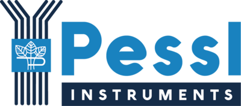
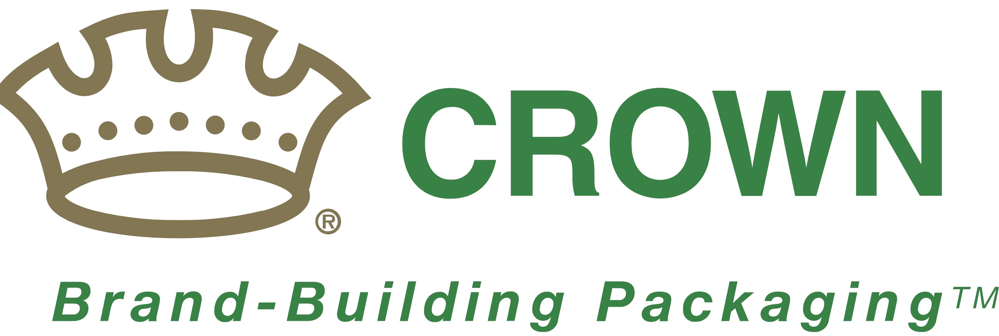

My Motivation
When data science is seen as merely the application of statistical techniques to business problems, there is a risk of getting correct answers to the wrong questions. The true art of data science lies in posing the right questions and understanding the underlying nature of the data. This is where my strengths lie.
With a strong background in research and development, innovation, and business management across various technology sectors, company scales, and countries, I have a wealth of practical experience to draw from. This helps me to ask the right questions. My education at the Massachusetts Institute of Technology provided me with the necessary tools and skillsets to answer these questions with mathematical rigor and state-of-the-art technology. As an entrepreneur in my own data science company, I demonstrated that I could successfully generate real value using these skills. My expertise is centered around R, Python, GIS applications, and related machine learning models. I am also experienced in situations where only limited or incomplete datasets are available.
After a successful career that brought me to general management and to Brazil, I am returning to my roots and my true strengths. A few years ago, I decided that data science, rather than business management, is my future, and thus founded my own data science company. Now, after 8 years abroad, personal and family reasons bring me back to Switzerland (by 6/2023). Here, I am looking for a great employer where I can contribute my skills in the long term and find a great, meaningful, and balanced engagement. I am a team player, self-motivated, and always curious.
I sold my company in Brazil as of April 2023 and aspire to obtain an ordinary employment. At the same time, I intend to continue my voluntary involvement at the MIT Alumni for Climate Action, a group of MIT scientists who engage their knowledge for the future of our planet. Therefore, I wish to work on an 80% workload (4 days per week). I am available in Switzerland as of 8/1/2023.
Thank you for your attention, and I look forward to the possibility of interviewing with your team.
Michael C. Rubin
Who I am
MIT Data Scientist with International Management Experience
- Birthday: 9 November 1982 (40 years)
- Private: Married, no Kids
- Nationality: Swiss (Bern)
- City: Worblaufen, BE, CH
- Situation: Moving back to CH after 8 years Brazil.
- Availability: 1.8.2023
- Desired: Fixed Employment, 80% (4 days/week)
- Top Degree: Master
- Top University: Massachusetts Institute of Technology
- Top Employer: Schneider Electric
- Speciality: Data Science & Statistics
- Languages Fluent: GE / EN / PT / ES / FR
Contact
Location:
3048 Bern, Switzerland
Email:
michael@aliacon.com.br
Whatsapp:
+55 11 97401 0846
Resume
Education
Massachusetts Institute of Technology
2018 - 2020
MicroMaster, Data Science & Statistics
Graduate Level course in Data Science and Statistics, complementary courses in Python, Supply Chain Analytics and Climatology.
Download DiplomaKalaidos Fachhochschule Schweiz
2008 - 2011
Executive MBA, International Marketing
Executive MBA course with focus on International Marketing. ECTS Grade A, Outstanding Master's Thesis.
Download DiplomaBerufsbildungszentrum Biel
2018 - 2020
Electrical Engineer, HF
Undergraduate Engineering course, Electrotechnique, Electronics, Information Technology. Focus C++ Programming. Grade ECTS B.
Download DiplomaGIBB Bern
2018 - 2020
Apprenticeship, Electrician
Apprenticeship as Electrical Installer. Grade ECTS B.
Download DiplomaProfessional Experience
ODAPES
04/2020 - 04/2023
Sao Paulo, BR
Data Scientist, Co-Founder
Turnkey Data Science project for Agrifood Industry. Own company with 5 people. Key clients: Nestle, Pessl Instruments, Summit Agro, Embrapa Brasil.
Pessl Instruments GmbH
2/2017 - 10/2020
Sao Paulo, BR
General Manager LATAM
Leading IoT and Data Science provider for the Agrifood market. My responsibility was to build-up and develop sales, production and R&D in LATAM, leading up to 15 people.
Download Reference LetterCrown Group (Signode Brasil)
1/2016 - 1/2017
Sao Paulo, BR
Head of Technology & New Business
Leading BU Technology, which includes Engineering, Project management and Solutions Sales. Building up R&D in country including M&A project.
Download Reference LetterSleever International
4/2015 - 12/2015
Sao Paulo, BR
Technical & Administrative Manager
Leadership of technical team, which includes after sales service and sales. Diverse tasks like audits and assisting legal case from technical side.
Download Reference LetterCrown Group (Orgapack)
8/2012 - 3/2015
Dietikon, CH
Market Developer, Regional Manager South
Market Development of Regions Europe, South America and parts of Middle East. Market Strategies, Channel + Distribution Management, Market Entry plans, sales.
Download Reference LetterSchneider Electric
1/2010 - 7/2012
Horgen, CH
Senior Product Manager & R&D Project Manager
Responisble for a product portfolio inclusing local R&D project management (PMP). Flagship project was the development of a product portfolio together with a external partner (ABN Braun AG), which was later aquired by Schneider Electric.
Download Reference Letter4/2008 - 12/2009
Ittigen, CH
Product Manager
Responsibility for a product portfolio including 4P marketing mix, techical expertise and cooperation in R&D project with headquarter (FR).
Download Reference Letter12/2005 - 3/2008
Ittigen, CH
Technical Project Manager & Support
Elaboration of technical project designs and technical project development, as well as technical support of the projects.
Download Reference LetterMy Skills
Programming Languages
Data Science Skills
Tools
Portfolio
Here is a selection of the project I developed in the last months. Please click on the icons to see the product in action or a detail documentation (Note that these apps are just simplified copies of the original system to run in the browser).
Machine Learning
- Client: IoT Company
- Problem: Sensor Data Quality Checks
I used Machine Learnig to decide if sensor data are true readings or sensor errors. Main challenge was the sparse error data. I used Data Centric AI/Synthetic Data to solve the problem.
Nestle Wheat Risk
- Client: Nestle do Brasil
- Problem: Detection of toxic substance use in Wheat
Wheat Farmers can use toxic substances to kill-off wheat (Dissecação) for easier harvest. I developed a method to decect this using ML and remote sensing images.
Automatic Agronomic Reports
- Client: Service Company
- Problem: PDF Reports by Email
We developed an automatic system which integrates APIs, analyzes GIS data, creates customized PDF reports and sends them to clients. It includes R-Shiny App to manage sendings.
Deep Work Planner
- Client: For own use
- Problem: App to plan Deep Work
We developed a R-Shiny app, which helps to plan the quarterly, weekly and daily tasks according to the Deep Work method. Start with quarterly and weekly goals and break them down to daily time blocks for uninterrupted focus.
Multiple Linear Regression
- Purpose: Teaching Embrapa
- Problem: How does MLR work (Math)
Did you know that MLR has a closed-form solution and can be solved algebraically. This is a walk through in Excel, which helps to understand the math behind MLR
Agronomic App
- Client: SummitAgro
- Problem: Web App for Clients
I developed an Agronomic Web App for a Multinational Fertilizer Company. The App serves as Digital Agriculture service to their clients. It includes weather data, GIS and agronomic algorithms.
Media & Packages
Here you can find a selection of my speeches, media presence and packages.
Embrapa: Webinar about Artificial Intelligence in Agriculture
Michael was a keynote speaker in the 2020 Embrapa Artificial Intelligence in Agriculture Webinar.
R-Shiny Conference 2022
Michael's Shows R-Shiny App he developed. App includes comprehensive Geospacial functions and a DB connection.
Low-Code Tool
Michael developed low-code extension for R-Shiny. It allows to create new Apps in a very efficient way. Here a beta version.
Testimonials

Anomymous
Maintenance Responsible at Metos Brazil
Michael came up with a very creative Machine Learning solution to automatically filter all our IoT sensor Data for potential sensor errors. This solutions saves us countless hours.